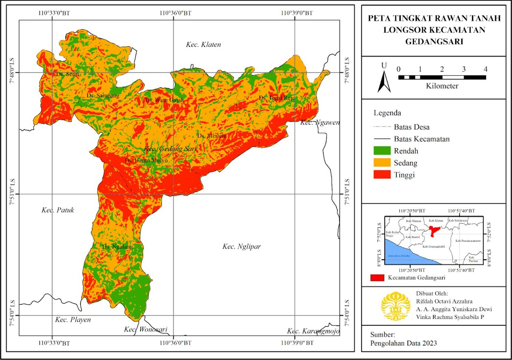
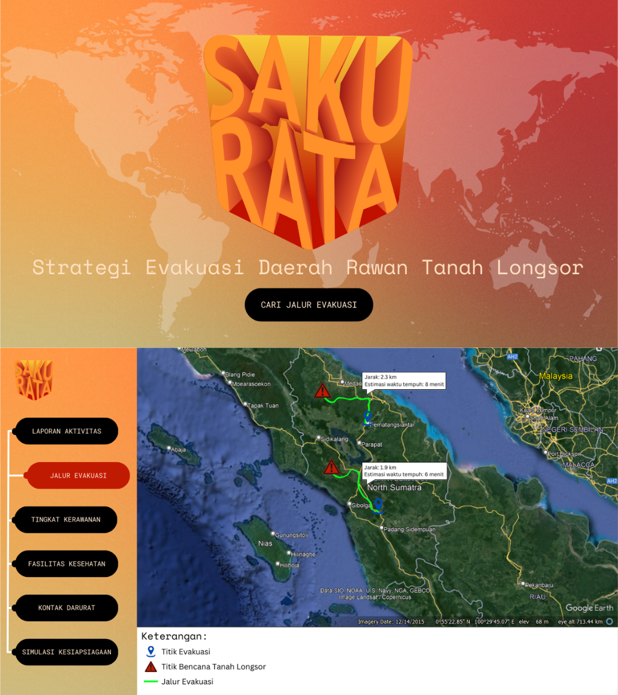

Inovasi Program SAKU RATA (Strategi Evakuasi Daerah Rawan Tanah Longsor) untuk Evakuasi Kawasan Bencana Tanah Longsor di Kecamatan Gedangsari
Latar belakang
Indonesia berada di jalur cincin api dan memiliki curah hujan tinggi, sehingga rawan bencana hidrometeorologi, terutama tanah longsor. Pada 2022, Kabupaten Gunungkidul tercatat mengalami 392 kejadian bencana, 145 di antaranya tanah longsor, dan 57 kejadian longsor terjadi di Kecamatan Gedangsari yang berlereng curam dan memiliki pergerakan tanah tinggi.
Salah satu upaya mitigasi adalah perencanaan evakuasi yang tepat. Penelitian ini memetakan tingkat rawan longsor di Kecamatan Gedangsari dengan metode skoring dan overlay, lalu menentukan jalur evakuasi dengan network analysis. Hasilnya diwujudkan dalam gagasan website SAKU RATA, yang menyajikan titik dan jalur evakuasi sehingga masyarakat dapat menemukan rute terdekat dari lokasi mereka.
Data yang digunakan
| Data | Format Data | Jenis Data | Sumber |
|---|---|---|---|
| Curah hujan | Vektor | Sekunder | CHIRPS |
| Geologi (jenis batuan) | Vektor | Sekunder | Badan Geologi |
| Jenis tanah | Vektor | Sekunder | FAO |
| Kelerengan (DEM) | Raster | Sekunder | SRTM |
| Tutupan lahan | Raster | Sekunder | USGS Land Cover |
| Jaringan jalan dan batas administrasi | Vektor | Sekunder | INA Geoportal |
| Titik survei, route tracking, dan dokumentasi | Vektor dan foto | Primer | Survei lapangan |
Metode
Tingkat rawan longsor ditentukan dengan model pendugaan Puslittanak (2004) memakai lima variabel: curah hujan, jenis batuan, kelerengan, tutupan lahan, dan jenis tanah. Setiap variabel diklasifikasikan, diberi skor, lalu dikalikan bobotnya, kemudian seluruh layer digabungkan dengan overlay di ArcGIS. Skor total dihitung dengan rumus berikut dan dibagi menjadi tiga kelas, yaitu rendah (2,0 sampai 2,67), sedang (2,67 sampai 3,34), dan tinggi (3,34 sampai 4,0).
Skor Total = 0,3 FCH + 0,2 FBD + 0,2 FKL + 0,2 FPL + 0,1 FJT
| Variabel | Bobot | Skor |
|---|---|---|
| Curah hujan | 30% | 1 sampai 5 |
| Jenis batuan | 20% | 1 sampai 3 |
| Kelerengan | 20% | 1 sampai 5 |
| Tutupan lahan | 20% | 1 sampai 5 |
| Jenis tanah | 10% | 1 sampai 5 |
Peta kerja dibuat dengan tool fishnet untuk menentukan titik survei dengan teknik purposive sampling, yaitu pada kawasan rawan longsor yang berada di permukiman, memiliki titik evakuasi, dan dekat jaringan jalan. Jalur evakuasi dihitung dengan network analysis di ArcMap berdasarkan jaringan jalan, dengan permukiman rawan tinggi sebagai titik awal dan titik evakuasi sebagai titik akhir. Hasilnya divalidasi di lapangan melalui ground check dan route tracking.
Hasil
Kecamatan Gedangsari terbagi menjadi tiga kelas kerawanan longsor. Hasil pemetaan awal dari data sekunder kemudian divalidasi di lapangan, dan komposisi akhirnya ditunjukkan pada tabel berikut.
| Kelas Rawan | Luas (Ha) | Persentase (%) |
|---|---|---|
| Rendah | 1.425 | 20,9 |
| Sedang | 3.511 | 51,5 |
| Tinggi | 1.878 | 27,6 |
| Total | 6.814 | 100 |

Kawasan rawan tinggi dan sedang tersebar merata di seluruh desa. Desa Hargo Mulyo memiliki kawasan rawan tinggi terluas (493 Ha), terutama di bagian selatan desa yang berlereng sangat curam dan curah hujannya tinggi, sedangkan Desa Sampang terkecil (65 Ha). Desa Ngalang memiliki luas rawan tinggi yang besar di bagian utara, sementara kawasan rawan rendah dominan di bagian selatan kecamatan.
Dari tujuh desa yang terdampak, network analysis menghasilkan tiga jalur evakuasi dari titik rawan tinggi menuju titik evakuasi terdekat. Setelah divalidasi lewat route tracking, jarak jalur hasil analisis hanya berbeda 140 meter (7,34%) dari kondisi lapangan, sehingga ketepatannya sekitar 92,66%. Perbedaan tersebut dipengaruhi oleh kondisi jalan, dan seluruh jalur dapat dilalui kendaraan roda empat.
| Jarak (m) | Jalur 1 | Jalur 2 | Jalur 3 | Total |
|---|---|---|---|---|
| Network analysis | 510 | 1.043 | 352 | 1.905 |
| Validasi lapangan | 480 | 965 | 320 | 1.765 |
| Selisih | 30 | 78 | 32 | 140 |
Seluruh hasil tersebut diwujudkan dalam gagasan website SAKU RATA, yang menampilkan jalur evakuasi terdekat berdasarkan lokasi pengguna, tingkat kerawanan, fasilitas kesehatan, kontak darurat, laporan aktivitas, dan simulasi kesiapsiagaan. Berbeda dengan banyak website kebencanaan yang hanya berfokus pada deteksi bencana, SAKU RATA melengkapinya dengan petunjuk evakuasi.

Kesimpulan
Kecamatan Gedangsari didominasi kawasan rawan sedang dan tinggi yang tersebar di seluruh desa, dengan konsentrasi rawan tinggi terutama di Desa Hargo Mulyo dan Ngalang akibat lereng yang terjal. Tiga jalur evakuasi yang dihasilkan network analysis terbukti akurat dan layak dilalui berdasarkan validasi lapangan, dengan waktu tempuh kurang dari 10 menit berjalan kaki. Melalui website SAKU RATA, informasi ini dapat diakses kapan saja sehingga masyarakat lebih siap menghadapi longsor, meskipun jalur tetap perlu dipantau karena material longsor dapat sewaktu-waktu menutup akses jalan.
← View other projects